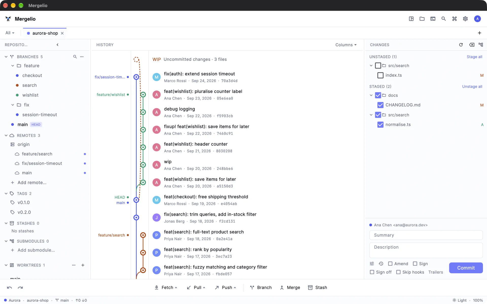
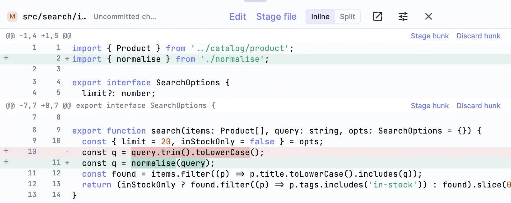
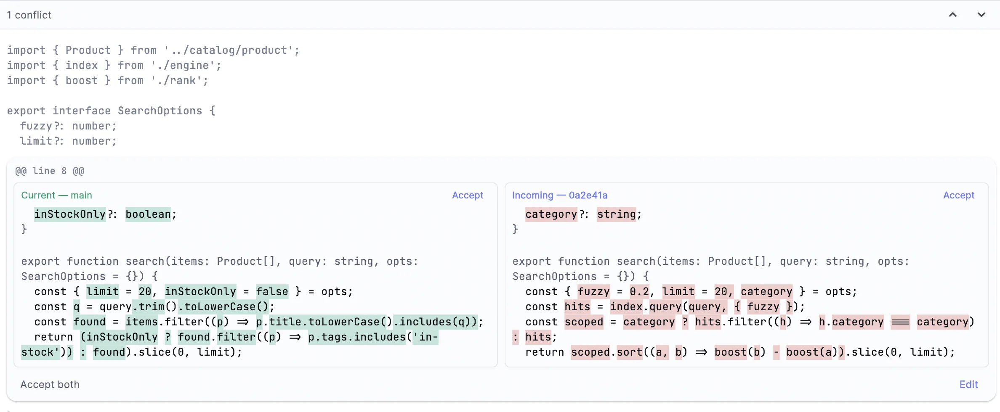
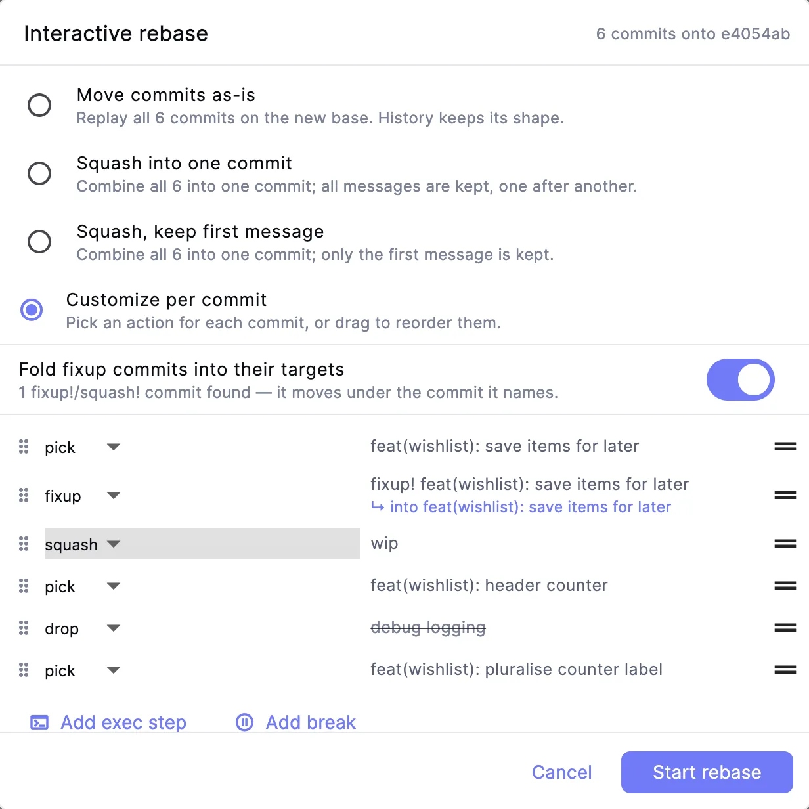

Git history you can see, shape and undo.
Mergelio is a free, open-source Git client for macOS, Windows and Linux. Read every branch in one graph, stage exactly the lines you want, resolve conflicts, rebase, and undo commits, merges and resets when you change your mind.
Free under the BSD-3-Clause licence. Mergelio uses the Git already on your machine; if there isn't one, install Git first.

A day on a branch
-
Read the history
Every branch gets its own lane, with branches, tags and remotes pinned to the commits they point at. Filter by author or date, or search for the commit that added a particular line of code.
-
Stage exactly what you mean
Stage or discard a whole file, one hunk, or just the lines you select. Diffs show side by side or inline, with word-level highlights, syntax colours and image comparison.

-
Resolve conflicts side by side
Each conflict shows your side and the incoming side next to each other, with the rest of the file around them. Accept one, accept both, or edit by hand. Resolving a file stages it and nothing more: you look it over and make the commit yourself.

-
Tidy up before you push
Pick, reword, squash, fix up or drop each commit, and drag rows to reorder them. fixup! commits fold under the commit they name, exec and break steps are there when you need them, and branches stacked on top move along.

-
Change your mind
Undo and redo commits, merges, rebases and branch moves while the app is open. A hard reset stashes your work before it runs, and undo puts it back. Every operation is written to a journal first, so if one is interrupted you hear about it on the next launch.
A hard reset moves main back a commit. Mergelio stashes the uncommitted work first, and one click on Undo brings back both the commit and the work.
Also in the window
- GitHub and GitLab
- Pull and merge requests with CI status and issues next to your branches, self-hosted servers included. Check out a pull request or open a new one. Tokens stay in your
git credentialhelper. - Files, editor and terminal
- Browse the project, edit files in tabs with find and replace, and keep a real shell docked under the repository.
- Private by default
- No account. No telemetry unless you turn it on. Update checks only if you say yes. Settings live in a local database.
- And the rest
- Commit and tag signature checks, blame and line history, worktrees, git notes, stashes with undo, profiles with their own SSH keys, a multi-repo dashboard, a command palette, themes, and an English or Ukrainian interface. Read the full feature list
Download Mergelio {{VERSION}}
Released {{DATE}}. What's new in this release
macOS
Apple silicon (M1 or later), macOS 12 or later
- Open the disk image.
- Drag Mergelio to Applications.
Signed with an Apple Developer ID and notarized by Apple.
{{MAC_SHA}}Windows
x64
- Run the installer.
- Install for all users, or choose to install just for you.
Signed with a Certum code signing certificate issued to Serhii Kotenko. To check it, open the installer's Properties → Digital Signatures, and compare the SHA-256 below.
{{WIN_SHA}}Linux
x64. Pick the package for your distribution.
Both packages install to /opt/mergelio, put mergelio on your PATH and add a launcher entry.
Every release ships SHA256SUMS.txt with a detached signature, SHA256SUMS.txt.asc. Here is how to verify a download. On macOS and Windows, Mergelio can install later updates itself if you let it check for new releases.